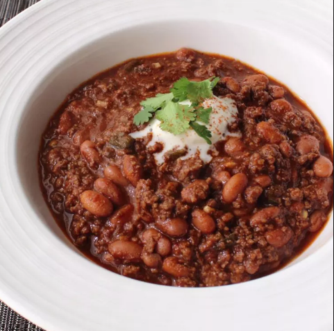

Beef Beer Chili

Using beer in chili adds incredible flavor to an underrated summer menu item. Bring a big ol'
thermos of this to a picnic or other warm-weather cookout, and it will make a great side to
those grilled burgers and dogs. Just have some insulated cups around — and maybe some hot sauce
— and you'll be in business. But no matter what season it is, I hope you give this beef, bean,
and beer chili a try soon.
Ingredients
- 1 tablespoon beff fat
- 2 pounds beef mince
- 1 onion, diced
- 2 teaspoons salt
- 3 tablespoons ground ancho chile powder
- 3 cloves garlic, minced
- 1 tablespoon ground cumin
- 1 teaspoon paprika
- 1 teaspoon ground black pepper
- ⅛ teaspoon ground cinnamon
- 1 (12 ounce) bottle beer
- 2 cups water, or as needed
- 1 cup tomato puree
- 1 teaspoon unsweetened cocoa powder
- ¼ teaspoon dried oregano
- ¼ teaspoon ground cayenne pepper
- ⅔ cup diced poblano pepper
Directions
- Place a large pot over high heat; drizzle in oil. Cook and stir ground beef,
onion, and salt in hot oil until beef is crumbly and browned and any released liquid evaporates,
about 4 minutes. Reduce heat to medium-high. Add chile powder, garlic, cumin, paprika, black pepper,
and cinnamon. Cook and stir until mixture begins to darken, 3 to 4 minutes.
- Pour in beer. Add water, tomato purée, cocoa powder, oregano, and cayenne; stir well. Bring to a simmer;
reduce heat to medium-low and cook for 30 minutes.
- Stir in beans and poblano pepper. Simmer until peppers are tender and flavors have blended, about 30 minutes;
add more water if chili becomes too thick.
Return to main page